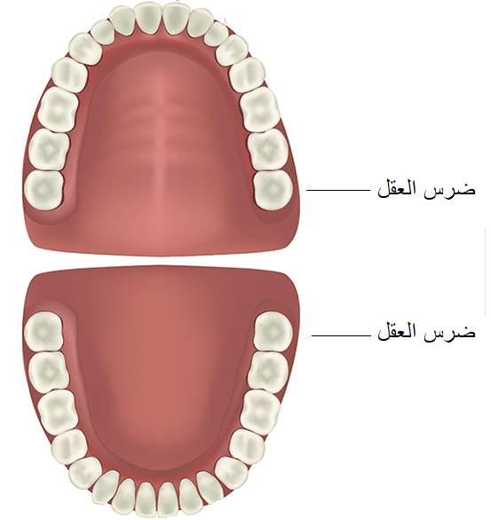
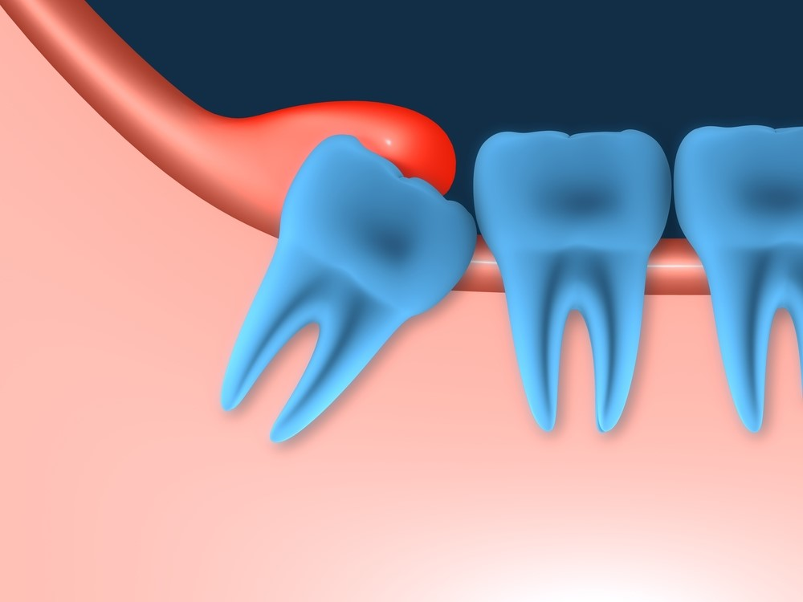
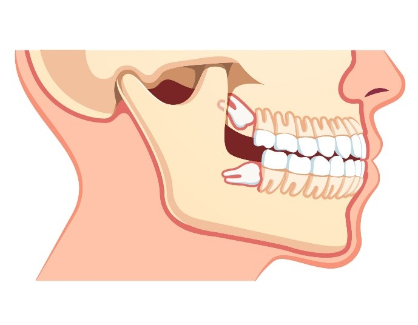
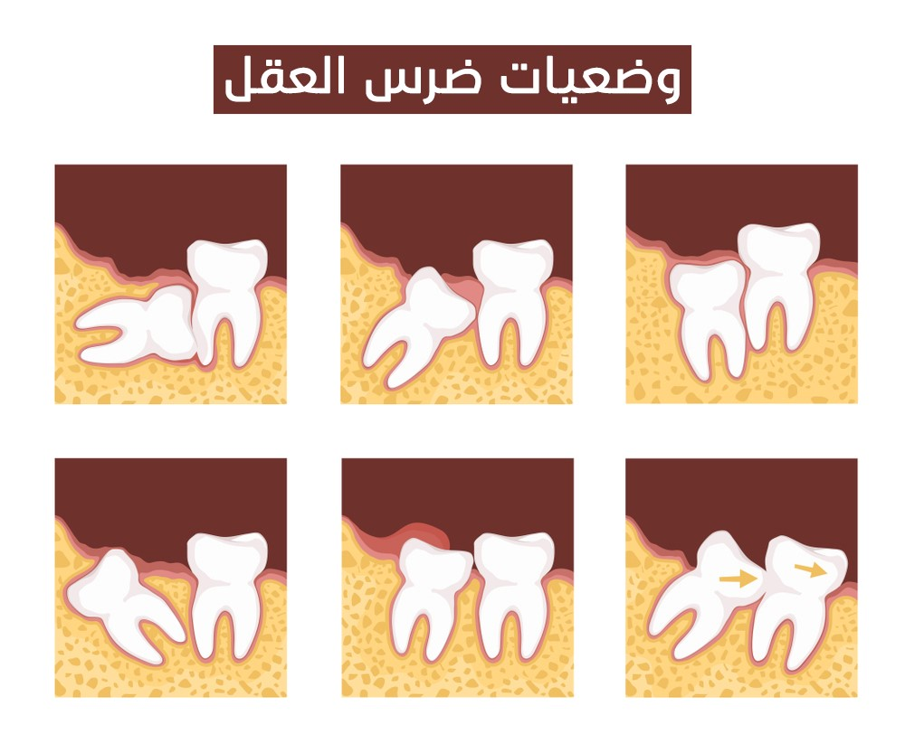

علاج وزراعة الأسنان
تعرَّف من خلال مقالاتنا على أحدث تقنيات علاج الأسنان، وأنجح الأساليب الوقائية للتمتع بأسنان صحيَّة قويَّة، إضافة إلى عمليات زراعة الأسنان، والجسور، والتقويم، وغيرها من المعلومات المتنوعة

ضرس العقل وفوائده ومتى تكون هناك حاجة لخلعه؟
بعد بلوغ الإنسان يبدأ ضرس العقل بالظهور، ويواجه بعض الأشخاص مشاكل صحية بسببه. سنتعرف على ضرس العقل ولماذا سمي بهذا الاسم وكل ما ترغب بمعرفته حوله.
جدول المحتويات
ما هو ضرس العقل ؟
أضراس العقل تظهر في المنطقة الخلفية من الفم تحت مسمى الأرحاء الثالثة، وتظهر كضرس واحد في نهاية كل صف من الأسنان من الجهتين ، وعادة لا تنمو حتى عمر 18 إلى 24 ، وقد لا تظهر إطلاقا أو تكون مدفونة بشكل كامل أو جزئي تحت اللثة أو داخل العظم الفكي وحيناها تدعى بأضراس العقل المدفونة ، ويختلف عدد وشكل أضراس العقل من شخص لـآخر ، وقد تنمو بشكل سليم وصحيح دون أن تسبب مشاكل فموية للثة والأسنان ، أو قد تسبب تسوس واحكتاك مع الأسنان الأخرى وصعوبة في تنظيف الأسنان مما يستدعى إزالتها عبر عملية جراحية.نقدّم لكم في علاجك الطبية، خدمات علاج الأسنان في تركيا بجودة ومعايير عالمية، ضمن عيادات مجهَّزة بأحدث الأجهزة والتقنيات المتطوّرة في إسطنبول، ومن خلال اختصاصات نوعيّة، على أيادي أمهر الأطباء الأسنان والجراحين.

لماذا سمي ضرس العقل بهذا الاسم؟
على الرغم أن الاسم الرسمي لها هي الأضراس الثالثة فالاسم الشائع لها هو أضراس العقل ، ويعود السبب لظهورها بشكل متأخر جدا عن ظهور بقية الأسنان ، وبعمر حين يعتبر الشخص أكثر حكمة من الطفل، المصطلح قد جاء غالبا من ترجمة المصطلح اللاتيني Dens sapientiae والتي تعني ضرس العقل.
كم عدد ضروس العقل: كم واحد؟
يوجد لدى الإنسان البالغ اثنَي عشر ضرساً، موزعةً على أربعة مجموعات، في كل مجموعة ثلاثة أضراس والضرس الأخير الثالث هو ضرس العقل ، فيوجد لدى الإنسان ما مجموعه 4 أضراس عقل وقد لا تظهر إطلاقا ، ويمكن أن تكون مدفونة تحت اللثة بشكل كامل أو جزئي.
ضرس العقل كم جذر؟
بشكل عام يحوي ضرس العقل جذرين أو ثلاثة ، ولكن قد يحوي البعض جذور أكثر.
ضرس العقل أين يقع؟
أضراس العقل هي الأسنان الجانبية الأبعد في أقواس الأسنان . الأضراس الأخيرة تسمى الطَّواحِن Molars ، والضرس الداخلي الثالث منها يسمى ضرس العقل.
وقد يقع ضرس العقل في عظم الفك أو تحت اللثة :

شكل ضرس العقل العلوي

شكل ضرس العقل السفلي

فوائد ضرس العقل
ضرس العقل كونه من الأضراس الطاحنة قد يفيد في سهولة طحن الطعام إن نمت بشكل سليم ، وقد تستعمل كدعامة في حال تسوس أو فقدان الأضراس الأخرى.
متى يظهر ضرس العقل؟ ضرس العقل في أي عمر يظهر؟
تظهر ضروس العقل ما بين عمر 18 إلى عمر 24 ، ويعتقد بعض الباحثين إن سبب تأخر ظهورها مقارنة ببقية الأضراس يرجع لطبيعة النظام الغذائي للأطفال ، والذي غالبا يكون كأطعمة لينة والخضار والفواكه الطازجة ، بينما مع تقدم العمر يزداد النظام الغذائي الذي يعتمد على اللحوم والأغذئية الأشد قسوة ، وبتالي يزداد الحاجة لظهور ضروس العقل.
ما هي مدة ألم ظهور ضرس العقل؟
قد لا يحدث ألم مع ظهور ضرس العقل إذا كان ينمو بشكل صحيح ، لكن في حالات عديدة يصاحب ظهور ضرس العقل إحتكاك للأسنان أو تسوس مما يسبب ظهور ألم مستمر ويتطلب الخلع.
انتفاخ ضرس العقل قبل ظهوره
قد يظهر انتفاخ لمنطقة اللثة المحيطة بضرس العقل بسبب الإحكتاك مع بقية الأسنان الأخرى ، وخاصة في حال كان ضرس العقل مدفون تحت اللثة مما يزيد من إمكانية تسوس المنطقة بالبكتيريا وحدوث الإنتفاخ.
متى يجب خلع ضرس العقل؟
يعود قرار خلع ضرس العقل أو تركه إلى إمكانية تسببه بالتسوس والمشاكل السنية والآلام أو اذا كان مسبقا يسبب هذه الأعراض ويمكن أخذ القرار بعد الإجابة على الأسئلة التالية:
- هل تسبب أضرار العقل الألم أو الضرر للفك أو الأسنان القريبة أو هل تزيد إمكانية حدوث ذلك؟
- هل تمنع أضراس العقل ظهور الأسنان الأخرى من النمو بشكل سليم؟
- هل يمكن أن تتداخل أسنان العقل مع علاجات الفك الأسنان أو الفك ؟
- ماهي مخاطر أو المضاعفات المرافقة للجراحة؟
- هل يمكن لأضراس العقل إٍستبدال أضراس متضررة أو المفقودة؟
وفي علاجك الطبية نقدم لكم الاستشارات المجانية.
ضرس العقل هل له عصب ؟
نعم ،و بالإضافة يقع اثنان من الأعصاب على مقربة من الأسنان العقل المدفونة ،العصب اللغوي والذي يوفر الإحساس في اللسان ، في حين أن العصب السنخي السفلي يعطي الإحساس إلى الشفة السفلى والجلد المحيط بالذقن.
ضرس العقل هل يمكن حشوه؟
يمكن في حال كان الضرس مكتمل النمو ، لكن حسب بحث جديد للكلية الملكية لجراحي طب الأسنان في إنلكترا فإن حشو ضرس العقل بدون تغيير لعوامل الخطر لن يغير شيئا ، و بإحتمالية مرتفع ستظهر المشكلة من جديد مع مرور الوقت.
مخاطر ظهور ضرس العقل في غير مكانه
قد يعاني المريض من وجود ضرس العقل المدفون كليا أو جزئيا تحت اللثة ويعود السبب غالبا لعدم إمتلاك ضرس العقل المساحة الكافية للظهور أو النمو بشكل طبيعي. فبالشكل الطبيعي قد تظهر أضراس العقل لدى البعض بدون أي مشاكل وبتراصف مع الأسنان الأخرى. في كثير من الحالات يكون الفم مكتظا أكثر من أن يسمح بظهور أضراس العقل بشكل سليم وتصبح تلك الأضراس مدفونة تحت اللثة. وقد تظهر هذه الأضراس بالأوضاع التالية:
- تظهر بزاوية نحو الأسنان المجاورة (الأضراس الثانية)
- تظهر بزواية نحو خلفية الفم
- تظهر بالزاوية الصحيحة للأسنان الأخرى كما لو أن ضروس العقل مستلقية مع عظم الفك.
- تظهر بإتجاه الأعلى أو الأسفل مثل الأسنان الأخرى لكن محتجزة داخل عظم الفك.
ومن مخاطر ظهور ضرس العقل في غير مكانه :
- يمكن أن يؤدي الازدحام والضغط إلى تزاحم عام للأسنان ؛ وقد يحتاج المريض إلى علاجات تقويمية لتقويم الأسنان الملتوية ، حتى في حالة عدم وجود أعراض، يمكن أن تتسبب أضراس العقل المدفونة في إتلاف الأسنان الأخرى ويمكن أن تكون أكثر عرضة للإصابة بالعدوى ، يمكن أن تؤدي العدوى إلى رائحة الفم الكريهة ، وجع الأذن ، والصداع ، وطعم غريب في الفم ، وآلام في الأسنان ، وتورم اللثة الذي قد يكون أكثر احمرارًا من المعتاد، وتورم الفك، ونزيف اللثة.
- ضرس العقل المتأثر جزئيًا أكثر عرضةً للإصابة بالعدوى؛ هذا لأن شكله وزاويته يزيدان احتمالية حدوث التسوس.
- تشمل الإصابات الأكثر خطورة التهاب النسيج الخلّوي في لسان الخد أو الحلق أو التهاب اللثة، وهو مرض اللثة الذي ينتج عندما تطلق طبقة التسوس (البلاك) سمومًا تهيج اللثة.
- قد ينمو السن ضمن نسيج كيس في عظم الفك يمتلئ بالسوائل مكونًا كيسًا ، يمكن للكيس أن يتلف عظم الفك والأسنان والأعصاب المجاورة وقد تسبب العدوى حول ضرس العقل نفسه ، ومن المحتمل أن تنتشر العدوى إلى مناطق أخرى من الفم والرأس.
- في حالات نادرة قد يتكون ورم غير سرطاني، وقد يلزم إزالة الأنسجة والعظام جراحيًا.
- قد يعاني المريض من الصداع ويعود ذلك لمجموعة متنوعة من الأسباب ، بما في ذلك أضراس العقل الناشئة أو المدفونة أو التي تحتاج إلى إزالتها .
- الالتهاب والألم حول مفاصل وعضلات الفك المصاحب لضرس العقل المدفون المتسوس قد يؤدي لاحقًا إلى الدوار ومشاكل في العين والأذن.
تحرير: علاجك الطبية©


المصادر: healthline , ncbi , Mouthhealthy ,webmd ,Jada
اطلع على أحدث المنشورات والأخبار الطبية
عمليات شفط الدهون بالفيزر في تركيا والأسعار 2021
يعتبر شفط الدهون بالفيزر من أفضل عمليات علاج السمنة المفرطة. تعرف معنا على مميزات وعيوب شفط الدهون بالفيزر وكيف تتم العملية وشاهد الفرق قبل وبعد في تركيا.
طرق علاج طول النظر في تركيا وأحدث التقنيات
يعاني الكثير من كبار السن وحتى البالغين من مرض طول النظر . سنتحدث في هذا المقال عن كيفية علاج طول النظر وأسباب هذا المرض ونسبة نجاح العلاج .
الفرق بين زراعة الشعر في ايران وتركيا 2021
بالرغم من أن أسعار زراعة الشعر بين تركيا وايران لا تختلف كثيرا إلا أن هنالك الكثير من الفروق التي قد تحدد لك الدولة الأفضل لزراعة الشعر فيها.
طرق علاج قصر النظر في تركيا وأحدث التقنيات
يعاني الكثير من الأطفال وحتى البالغين من مرض قصر النظر. سنتعرف في هذا المقال على أفضل طرق علاج قصر النظر وأسباب هذا المرض ونسبة نجاح العلاج .